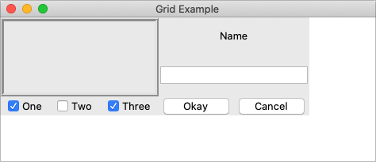

The Grid Geometry Manager
We'll take a bit of a break from talking about different widgets (what to put onscreen) and
focus instead on geometry management (where to put those widgets). We introduced the general idea of
geometry management in the "Tk Concepts" chapter. Here, we focus on one specific geometry manager: grid.
As we've seen, grid lets you layout widgets in columns and rows. If you're familiar with using
HTML tables to do layout, you'll feel right at home here. This chapter illustrates the various ways
you can tweak grid to give you all the control you need for your user interface.
Grid is one of several geometry managers available in Tk, but its mix of power, flexibility, and ease of use make it the best choice
for general use. Its constraint model is a natural fit with today's layouts that rely on the alignment of widgets.
There are other geometry managers in Tk: pack is also quite powerful, but harder to
use and understand, while place gives you complete control of positioning each element.
Even widgets like paned windows, notebooks, canvas, and text that we'll explore later can act as geometry managers.
It's worth noting that grid was first introduced to Tk in 1996, several years after Tk became popular, and it took a while to catch on.
Before that, developers had always used pack to do constraint-based geometry management. When grid came
out, many developers kept using pack, and you'll still find it used in many Tk programs and documentation.
While there's nothing technically wrong with pack, the algorithm's behavior is often hard to understand.
More importantly, because the order that widgets are packed is significant in determining layout, modifying
existing layouts can be more difficult. Aligning widgets in different parts of the user interface is also much trickier.
Grid has all the power of pack, produces nicer layouts (that align widgets both horizontally and vertically), and is easier to learn and use. Because of that, we think grid is the right choice for most developers most of the time. Start your new programs using grid, and switch old ones to grid as you're making changes to an existing user interface.
The reference documentation for grid provides an exhaustive description of grid, its behaviors and all options.
Columns and Rows
In grid, widgets are assigned a column number and a row number. These indicate each widget's position
relative to other widgets. All widgets in the same column will be above or below each other.
Those in the same row will be to the left or right of each other.
Column and row numbers must be positive integers (i.e., 0, 1, 2, ...). You don't have to start at 0 and can leave gaps in column and row numbers (e.g., column 1, 2, 10, 11, 12, 20, 21). This is useful if you plan to add more widgets in the middle of the user interface later.
The width of each column will vary depending on the width of the widgets contained within the column. Ditto for the height of each row. This means when sketching out your user interface and dividing it into rows and columns, you don't need to worry about each column or row being equal width.
Spanning Multiple Cells
Widgets can take up more than a single cell in the grid; to do this, we'll use the columnspan
and rowspan options when gridding the widget. These are analogous to the "colspan" and "rowspan"
attribute of HTML tables.
Here is an example of creating a user interface with multiple widgets, some that take up more than a single cell.

Gridding multiple widgets.
from tkinter import * from tkinter import ttk root = Tk() content = ttk.Frame(root) frame = ttk.Frame(content, borderwidth=5, relief="ridge", width=200, height=100) namelbl = ttk.Label(content, text="Name") name = ttk.Entry(content) onevar = BooleanVar(value=True) twovar = BooleanVar(value=False) threevar = BooleanVar(value=True) one = ttk.Checkbutton(content, text="One", variable=onevar, onvalue=True) two = ttk.Checkbutton(content, text="Two", variable=twovar, onvalue=True) three = ttk.Checkbutton(content, text="Three", variable=threevar, onvalue=True) ok = ttk.Button(content, text="Okay") cancel = ttk.Button(content, text="Cancel") content.grid(column=0, row=0) frame.grid(column=0, row=0, columnspan=3, rowspan=2) namelbl.grid(column=3, row=0, columnspan=2) name.grid(column=3, row=1, columnspan=2) one.grid(column=0, row=3) two.grid(column=1, row=3) three.grid(column=2, row=3) ok.grid(column=3, row=3) cancel.grid(column=4, row=3) root.mainloop()
Layout within the Cell
Because the width of a column (and height of a row) depends on all the widgets that have been added to it, the odds are that at least some widgets will have a smaller width or height than has been allocated for the cell its been placed in. So the question becomes, where exactly should it be put within the cell?
By default, if a cell is larger than the widget contained in it, the widget will be centered within it, both horizontally and vertically. The master's background will display in the empty space around it. In the figure below, the widget in the top right is smaller than the cell allocated to it. The (white) background of the master fills the rest of the cell.
Layout within the cell and the 'sticky' option.
The sticky option can change this default behavior.
Its value is a string of 0 or more of the compass directions nsew,
specifying which edges of the cell the widget should be "stuck" to. For example, a
value of n (north) will jam the widget up against the top side, with any extra vertical
space on the bottom; the widget will still be centered horizontally. A value of nw (north-west)
means the widget will be stuck to the top left corner, with extra space on the bottom and right.
In Tkinter, you can also specify this as a list containing any of N, S, E, and W.
It's a stylistic choice, and we'll tend to use the list format in this book.
Specifying two opposite edges, such as we (west, east) means that the widget will be stretched.
In this case, it will be stuck to both the left and right edge of the cell. So the widget will then be wider
than its "ideal" size.
If you want the widget to expand to fill up the entire cell, grid it with a sticky value of nsew
(north, south, east, west), meaning it will stick to every side. This is shown in the bottom left widget in the above figure.
Most widgets have options that can control how they are displayed if
they are larger than needed. For example, a label widget has an anchor option that
controls where the label's text will be positioned within the widget's boundaries. The bottom left label
in the figure above uses the default anchor (w, i.e., left side, vertically centered).
If you're having trouble getting things to line up the way you want them to,
first make sure you know large the widget is. As we discussed with the
label widget in the previous chapter, changing the widget's background or border can help.
the
Handling Resize
If you've tried to resize the example, you'll notice that nothing moves at all, as shown below.

Resizing the window.
Even if you took a peek below and added the extra sticky options to our example, you'd still see the
same thing. It looks like sticky may tell Tk how to react if the cell's row or column does resize,
but doesn't actually say that the row or columns should resize if extra room becomes available.
Let's fix that.
Every column and row in the grid has a weight option associated with it. This tells grid how much
the column or row should grow if there is extra room in the master to fill. By default, the weight of each column or
row is 0, meaning it won't expand to fill any extra space.
For the user interface to resize then, we'll need to specify a positive weight to the columns that
we'd like to expand. This is done using the columnconfigure and rowconfigure methods of grid.
This weight is relative. If two columns have the same weight, they'll expand at the same rate.
In our example, we'll give the three leftmost columns (holding the checkbuttons) a weight of 3, and the two rightmost columns
a weight of 1. For every one pixel the right columns grow, the left columns will grow by three pixels. So as the window grows
larger, most of the extra space will go to the left side.

Resizing the window after adding weights.
Both columnconfigure and rowconfigure also take a minsize grid option,
which specifies a minimum size which you really don't want the column or row to shrink beyond.
Padding
Normally, each column or row will be directly adjacent to the next, so that widgets will be right next to each other. This is sometimes what you want (think of a listbox and its scrollbar), but often you want some space between widgets. In Tk, this is called padding, and there are several ways you can choose to add it.
We've already actually seen one way, and that is using a widget's own options to add the extra
space around it. Not all widgets have this, but one that does is a frame; this is useful because
frames are most often used as the master to grid other widgets. The frame's padding
option lets you specify a bit of extra padding inside the frame, whether the same amount for
each of the four sides or even different for each.
A second way is using the padx and pady grid options when adding the widget. As you'd
expect, padx puts a bit of extra space to the left and right, while pady
adds extra space top and bottom. A single value for the option puts the same padding on
both left and right (or top and bottom), while a two-value list lets you put different amounts
on left and right (or top and bottom). Note that this extra padding is within the grid cell
containing the widget.
If you want to add padding around an entire row or column, the columnconfigure and rowconfigure
methods accept a pad option, which will do this for you.
Let's add the extra sticky, resizing, and padding behavior to our example (additions in bold).
from tkinter import * from tkinter import ttk root = Tk() content = ttk.Frame(root, padding=(3,3,12,12)) frame = ttk.Frame(content, borderwidth=5, relief="ridge", width=200, height=100) namelbl = ttk.Label(content, text="Name") name = ttk.Entry(content) onevar = BooleanVar() twovar = BooleanVar() threevar = BooleanVar() onevar.set(True) twovar.set(False) threevar.set(True) one = ttk.Checkbutton(content, text="One", variable=onevar, onvalue=True) two = ttk.Checkbutton(content, text="Two", variable=twovar, onvalue=True) three = ttk.Checkbutton(content, text="Three", variable=threevar, onvalue=True) ok = ttk.Button(content, text="Okay") cancel = ttk.Button(content, text="Cancel") content.grid(column=0, row=0, sticky=(N, S, E, W)) frame.grid(column=0, row=0, columnspan=3, rowspan=2, sticky=(N, S, E, W)) namelbl.grid(column=3, row=0, columnspan=2, sticky=(N, W), padx=5) name.grid(column=3, row=1, columnspan=2, sticky=(N,E,W), pady=5, padx=5) one.grid(column=0, row=3) two.grid(column=1, row=3) three.grid(column=2, row=3) ok.grid(column=3, row=3) cancel.grid(column=4, row=3) root.columnconfigure(0, weight=1) root.rowconfigure(0, weight=1) content.columnconfigure(0, weight=3) content.columnconfigure(1, weight=3) content.columnconfigure(2, weight=3) content.columnconfigure(3, weight=1) content.columnconfigure(4, weight=1) content.rowconfigure(1, weight=1) root.mainloop()
This looks more promising. Play around with the example to get a feel for the resize behavior.

Grid example, handling in-cell layout and resize.
Additional Grid Features
If you look at the reference documentation for grid, you'll see
many other things you can do with grid. Here are a few of the more useful ones.
Querying and Changing Grid Options
Like widgets themselves, it's easy to introspect the various grid options or change them. Setting options when you first grid the widget is certainly convenient, but you can change them anytime you'd like.
The slaves method will tell you all the widgets that have been gridded inside a master, or optionally
those within just a certain column or row. The info method will return a list of all the grid
options for a widget and their values. Finally, the configure method lets you change one or more
grid options on a widget.
These are illustrated in this interactive session:
>>> content.grid_slaves()
[<tkinter.ttk.Button object .!frame.!button2>, <tkinter.ttk.Button object .!frame.!button>,
<tkinter.ttk.Checkbutton object .!frame.!checkbutton3>, <tkinter.ttk.Checkbutton object .!frame.!checkbutton2>,
<tkinter.ttk.Checkbutton object .!frame.!checkbutton>, <tkinter.ttk.Entry object .!frame.!entry>,
<tkinter.ttk.Label object .!frame.!label>, <tkinter.ttk.Frame object .!frame.!frame>]
>>> for w in content.grid_slaves(): print(w)
...
.!frame.!button2
.!frame.!button
.!frame.!checkbutton3
.!frame.!checkbutton2
.!frame.!checkbutton
.!frame.!entry
.!frame.!label
.!frame.!frame
>>> for w in content.grid_slaves(row=3): print(w)
...
.!frame.!button2
.!frame.!button
.!frame.!checkbutton3
.!frame.!checkbutton2
.!frame.!checkbutton
>>> for w in content.grid_slaves(column=0): print(w)
...
.!frame.!checkbutton
.!frame.!frame
>>> namelbl.grid_info()
{'in': <tkinter.ttk.Frame object .!frame>, 'column': 3, 'row': 0, 'columnspan': 2, 'rowspan': 1,
'ipadx': 0, 'ipady': 0, 'padx': 5, 'pady': 0, 'sticky': 'nw'}
>>> namelbl.grid_configure(sticky=(E,W))
>>> namelbl.grid_info()
{'in': <tkinter.ttk.Frame object .!frame>, 'column': 3, 'row': 0, 'columnspan': 2, 'rowspan': 1,
'ipadx': 0, 'ipady': 0, 'padx': 5, 'pady': 0, 'sticky': 'ew'}Internal Padding
You saw how the padx and pady grid options added extra space around the outside of a widget.
There's also a less used type of padding called "internal padding" controlled by the
grid options ipadx and ipady.
The difference can be subtle. Let's say you have a frame that's 20x20, and specify normal (external) padding of 5 pixels on each side. The frame will request a 20x20 rectangle (its natural size) from the geometry manager. Normally, that's what it will be granted, so it'll get a 20x20 rectangle for the frame, surrounded by a 5-pixel border.
With internal padding, the geometry manager will effectively add the extra padding to the widget when
figuring out its natural size, as if the widget has requested a 30x30 rectangle. If the frame is
centered, or attached to a single side or corner (using sticky), we'll end up with a 20x20 frame
with extra space around it. If, however, the frame is set to stretch (i.e., a sticky value of we,
ns, or nwes), it will fill the extra space, resulting in a 30x30 frame, with no border.
Forget and Remove
The forget method of grid removes slaves from the grid they're currently part of.
It takes a list of one or more slave widgets as arguments. This does not destroy the widget altogether but takes it off the
screen as if it had not been gridded in the first place. You can grid it again later, though any grid options
you'd originally assigned will have been lost.
The remove method of grid works the same, except that the grid options will be remembered if you grid it again later.
Nested Layouts
As your user interface gets more complicated, the grid that you're using to organize all your widgets can get increasingly complicated. This can make changing and maintaining your program very difficult.
Luckily, you don't have to manage your entire user interface with a single grid. If you have one area of your user interface that is fairly independent of others, create a new frame to hold that area and grid the widgets in area within that frame. For example, if you were building a graphics editor with multiple palettes, toolbars, etc., each one of those areas might be a candidate for putting in its own frame.
In theory, these frames, each with its own grid, can be nested arbitrarily deep, though, in practice, this usually doesn't go beyond a few levels. This can be a big help in modularizing your program. If, for example, you have a palette of drawing tools, you can create the whole thing in a separate function or class. It would be responsible for creating all the component widgets, gridding them together, setting up event bindings, etc. The details of how things work inside that palette can be contained in that one piece of code. From the point of view of your main program, all it needs to know about is the single frame widget containing your palette.
Our examples have shown just a hint of this, where a content frame was gridded into the main window, and then all the other widgets gridded into the content frame.
As your own programs grow larger, you'll likely run into situations where making a change in the layout of
one part of your interface requires code changes to the layout of another part. That may be a clue to reconsider
how you're using grid and if splitting out components into separate frames would help.